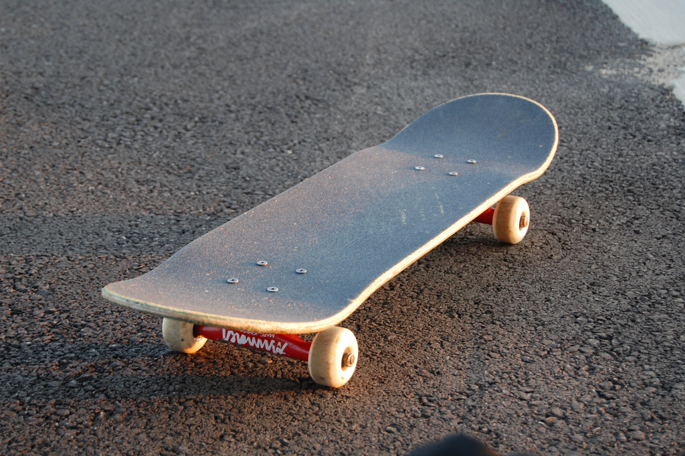

Le skateboard, terme anglais qui a supplanté le français planche à roulettes1, est composé d'un plateau sous lequel sont fixés deux essieux (les trucks) maintenant chacun deux roues équipées de roulements à billes.
Le skateboard est utilisé comme moyen de déplacement ou pour réaliser des figures (tricks), le plus souvent en environnement urbain, ou dans des espaces dédiés (skateparks). Il sert aussi dans sa forme "longskate" à des courses de vitesse, le "downhill".
Les pratiquants sont appelés « skateurs », « planchistes » ou « riders »..
A skateboard is a type of sports equipment used primarily for the activity of skateboarding. It usually consists of a specially designed maplewood board combined with a polyurethane coating used for making smoother slides and stronger durability.
A skateboard is propelled by pushing with one foot while the other remains on the board, or by pumping one's legs in structures such as a bowl or half pipe. A skateboard can also be used by simply standing on the deck while on a downward slope and allowing gravity to propel the board and rider. If the rider positions their right foot forward, he/she is said to ride "goofy;" if the rider positions their left foot forward, he/she is said to ride "regular." If the rider is normally regular but chooses to ride goofy, he/she is said to be riding in "switch," and vice versa. A skater is typically more comfortable pushing with their back foot; choosing to push with the front foot is commonly referred to as riding "mongo".
Recently, electric skateboards have also appeared. These no longer require the propelling of the skateboard by means of the feet; rather an electric motor propels the board, fed by an electric battery.

There is no governing body that declares any regulations on what constitutes a skateboard or the parts from which it is assembled. Historically, the skateboard has conformed both to contemporary trends and to the ever-evolving array of stunts performed by riders/users, who require a certain functionality from the board. Of course, the board shape depends largely upon its desired function. Longboards are a type of skateboard with a longer wheelbase and larger, softer wheels.
The two main types of skateboards are the longboard and the shortboard. The shape of the board is also important: the skateboard must be concave to perform tricks.[1] Longboards are faster and mostly used for cruising and racing and shortboards are mostly used for tricks.